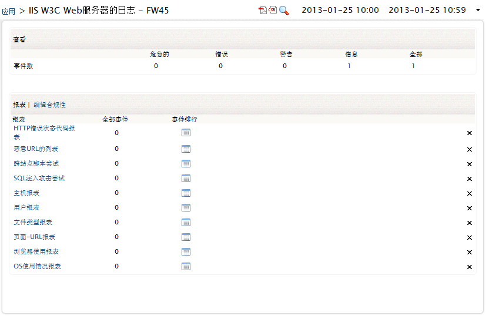
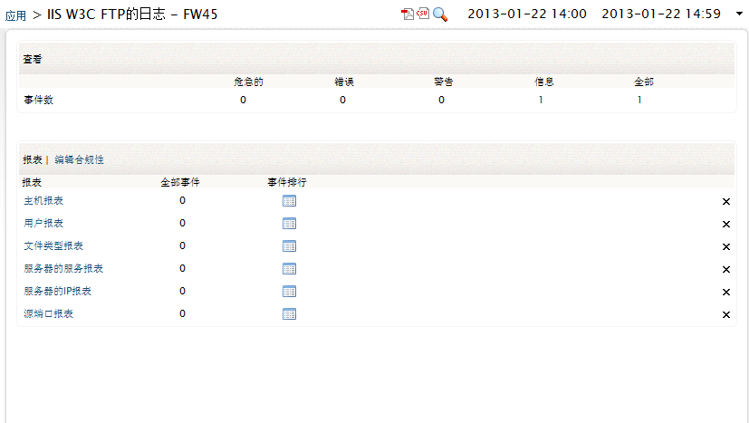
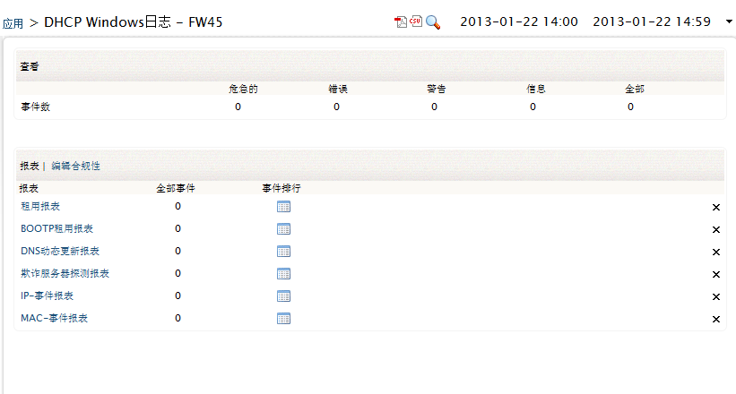
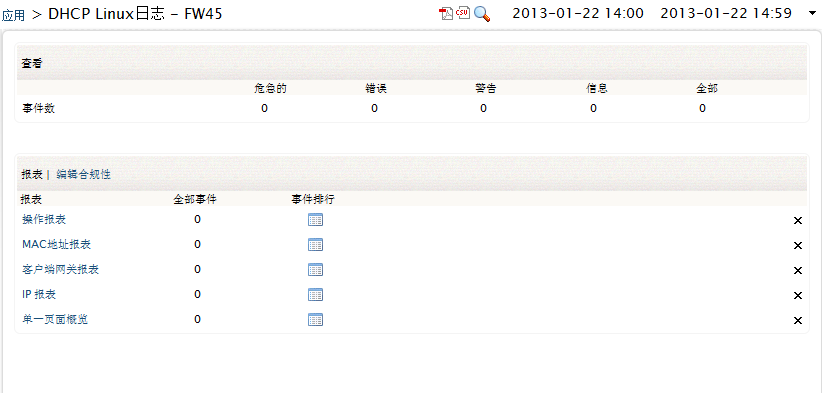
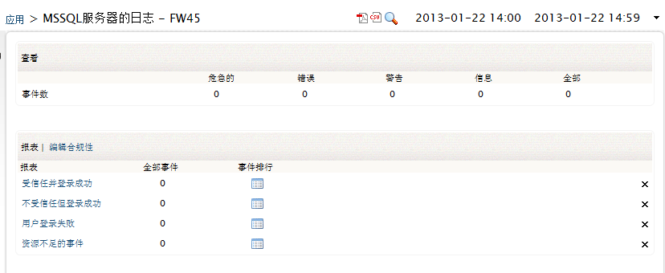
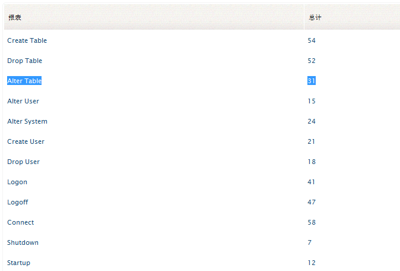
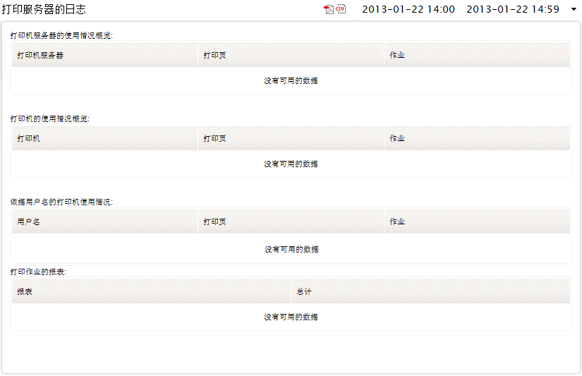
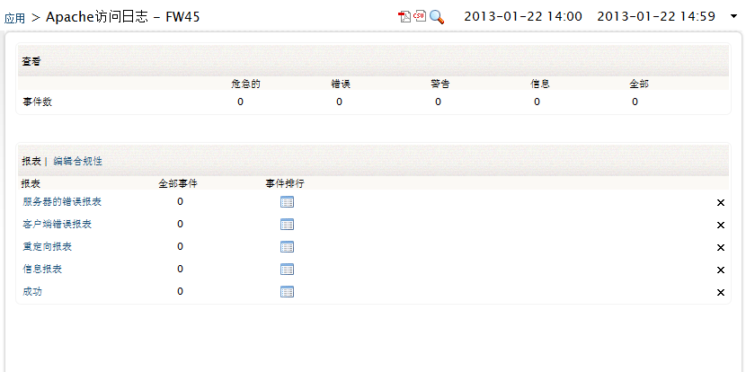

应用日志报表
应用报表为每种应用提供各种不同的报表。
可通过以下菜单来浏览这些报表：
- 主页页签 > 应用 > 主机名称：<和应用关联的主机的名称>
-
报表页签 > 详细应用报表部分 > 查看报表：<应用名称>日志
详细应用报表部分列出了每个应用日志报表的日志类型、报表明细和查看报表列。
查看报表列下的链接可以打开对应的应用日志的报表。
支持的应用日志类型包括：
MS IIS W3C Web服务器日志报表
点击查看报表链接将会打开IIS W3C Web服务器日志报表页面。

在页面顶部概览部分的事件计数表中显示了按照事件严重度的事件的统计计数。在事件计数表下方，主机部分显示了每个主机的各种严重度的事件计数信息。在报表部分，显示了各种生成的报表，以及每个报表中的全部事件和事件排行。在每个报表行的行为，都对应有一个删除图标，您可以点击它来删除报表。咋报表表头部分有编辑报表链接，您可以在这里编辑要显示的报表。
EventLog Analyzer包含的预置报表：
- 主机报表 - 此报表包含的信息包括：客户端IP地址、命中、页面视图、发送字节和事件
- 用户报表 - 此报表包含的信息包括：用户名、命中、页面视图、发送字节和事件
- 文件类型报表 - 此报表包含的信息包括：文件类型、命中、百分比、发送字节和事件
- 页面-URL报表 - 此报表包含的信息包括：URI词干、命中、页面视图、发送字节和事件
- 浏览器使用报表 - 此报表包含的信息包括：浏览器、命中、百分比和事件
- OS使用情况报表 - 此报表包含的信息包括：OS、命中、百分比和事件
- HTTP错误状态代码报表 - 此报表包含的信息包括：HTTP状态、命中、百分比和事件
- 恶意URL列表 - 此报表包含的信息包括：URI词干、命中、百分比和事件
- 跨站点脚本尝试 - 此报表包含的信息包括：客户端IP地址、用户名和事件
- SQL注入攻击尝试 - 此报表包含的信息包括：客户端IP地址、用户名和事件
MS IIS W3C
FTP服务器日志报表
点击查看报表链接打开MS IIS W3C FTP服务器日志报表页面。

在页面顶部概览部分的事件计数表中显示了按照事件严重度的事件的统计计数。在事件计数表下方，主机部分显示了每个主机的各种严重度的事件计数信息。在报表部分，显示了各种生成的报表，以及每个报表中的全部事件和事件排行。在每个报表行的行为，都对应有一个删除图标，您可以点击它来删除报表。咋报表表头部分有编辑报表链接，您可以在这里编辑要显示的报表。
EventLog Analyzer包含的预置报表：
- 主机报表 - 此报表包含的信息包括：客户端IP地址、发送字节、接收字节和事件
- 用户报表 - 此报表包含的信息包括：用户名、发送字节、接收字节和事件
- 文件类型报表 - 此报表包含的信息包括：文件类型、文件传输、发送字节、接收字节和事件
- 服务器服务报表 - 此报表包含的信息包括：服务器服务、文件传输、发送字节、接收字节和事件
- 服务器IP报表 - 此报表包含的信息包括：服务器IP地址、文件传输、发送字节、接收字节和事件
- 源端口报表 - 此报表包含的信息包括：服务器端口、文件传输、发送字节、接收字节和事件
DHCP Windows服务器日志报表
点击查看报表链接打开DHCP Windows服务器日志报表页面。

在页面顶部概览部分的事件计数表中显示了按照事件严重度的事件的统计计数。在事件计数表下方，主机部分显示了每个主机的各种严重度的事件计数信息。在报表部分，显示了各种生成的报表，以及每个报表中的全部事件和事件排行。在每个报表行的行为，都对应有一个删除图标，您可以点击它来删除报表。咋报表表头部分有编辑报表链接，您可以在这里编辑要显示的报表。
EventLog Analyzer包含的预置报表：
- 租用报表 - 此报表包含的信息包括：租用报表和事件
- BOOTP租用报表 - 此报表包含的信息包括：事件
- DNS动态更新报表 - 此报表包含的信息包括：DNS更新明细和事件。DNS更新明细包括：DNS动态更新请求和DNS动态更新成功
- 欺诈服务器探测报表 - 此报表包含的信息包括：事件
- IP-事件报表 - 此报表包含的信息包括：IP地址和事件
- MAC-事件报表 - 此报表包含的信息包括：MAC地址和事件
DHCP Linux服务器日志报表
点击查看报表链接打开DHCP Linux服务器日志报表页面。

在页面顶部概览部分的事件计数表中显示了按照事件严重度的事件的统计计数。在事件计数表下方，主机部分显示了每个主机的各种严重度的事件计数信息。在报表部分，显示了各种生成的报表，以及每个报表中的全部事件和事件排行。在每个报表行的行为，都对应有一个删除图标，您可以点击它来删除报表。咋报表表头部分有编辑报表链接，您可以在这里编辑要显示的报表。
EventLog Analyzer包含的预置报表：
- 操作报表 - 此报表包含的信息包括：操作和事件。操作包括：DHCPREQUEST、DHCPNAK、DHCPDISCOVER、DHCPOFFER、DHCPACK、DHCPINFORM、if IN、delete、Wrote、DHCPRELEASE和Abandoning IP
- MAC-事件报表 - 此报表包含的信息包括：MAC地址和事件
- 客户端网关报表 - 此报表包含的信息包括：网关和事件
- IP-事件报表 - 此报表包含的信息包括：IP地址和事件
- 单一页面概览 - 此报表包含的信息包括：日志记录器、操作、IP地址、MAC地址、网管和事件
MS SQL服务器日志报表
点击查看报表链接打开MS SQL服务器日志报表页面。

在页面顶部概览部分的事件计数表中显示了按照事件严重度的事件的统计计数。在事件计数表下方，主机部分显示了每个主机的各种严重度的事件计数信息。在报表部分，显示了各种生成的报表，以及每个报表中的全部事件和事件排行。在每个报表行的行为，都对应有一个删除图标，您可以点击它来删除报表。咋报表表头部分有编辑报表链接，您可以在这里编辑要显示的报表。
EventLog Analyzer包含的预置报表：
- 受信任并登录成功 - 此报表包含的信息包括：用户名和事件
- 不受信任但登录成功 - 此报表包含的信息包括：用户名和事件
- 用户登录失败 - 此报表包含的信息包括：用户名和事件
- 资源不足的事件 - 此报表包含的信息包括：事件
Oracle审计日志报表
点击查看报表链接打开Oracle数据库服务器日志报表页面。

在页面顶部概览部分的事件计数表中显示了按照事件严重度的事件的统计计数。在事件计数表下方，主机部分显示了每个主机的各种严重度的事件计数信息。在报表部分，显示了各种生成的报表，以及每个报表中的全部事件和事件排行。在每个报表行的行为，都对应有一个删除图标，您可以点击它来删除报表。咋报表表头部分有编辑报表链接，您可以在这里编辑要显示的报表。
EventLog Analyzer包含的预置报表：
- 创建表 - 此报表包含的信息包括：SESSIONID、ENTRYID、USERID、USERHOST、TERMINAL、RETURNCODE、OBJ$CREATOR、OBJ$NAME和Time
- 删除表 - 此报表包含的信息包括：SESSIONID、ENTRYID、USERID、USERHOST、TERMINAL、RETURNCODE、OBJ$CREATOR、OBJ$NAME和Time
- 修改表 - 此报表包含的信息包括：SESSIONID、
ENTRYID、
USERID、
USERHOST、
TERMINAL、
RETURNCODE、
OBJ$CREATOR、
OBJ$NAME和Time
- 修改用户 - 此报表包含的信息包括：SESSIONID、
ENTRYID、
USERID、
USERHOST、
TERMINAL、
RETURNCODE、
OBJ$NAME和Time
- 修改系统 - 此报表包含的信息包括：SESSIONID、
ENTRYID、
USERID、
USERHOST、
TERMINAL、
RETURNCODE和 Time
- 创建用户 - 此报表包含的信息包括：SESSIONID、
ENTRYID、
USERID、
USERHOST、
TERMINAL、
RETURNCODE、
OBJ$NAME和Time
- 删除用户 - 此报表包含的信息包括：SESSIONID、
ENTRYID、
USERID、
USERHOST、
TERMINAL、
RETURNCODE、
OBJ$NAME和Time
- 登录 - 此报表包含的信息包括：SESSIONID、
ENTRYID、
USERID、
USERHOST、
TERMINAL、
RETURNCODE和Time
- 退出 - 此报表包含的信息包括：SESSIONID、
ENTRYID、
USERID、
USERHOST、
TERMINAL、
RETURNCODE和Time
- 连接 - 此报表包含的信息包括：DATABASE USER、
PRIVILEGE、
CLIENT USER、
CLIENT TERMINAL、
Status和Time
- 关闭 - 此报表包含的信息包括：DATABASE USER、
PRIVILEGE、
CLIENT USER、
CLIENT TERMINAL、
Status和Time
- 启动 - 此报表包含的信息包括：DATABASE USER、
PRIVILEGE、
CLIENT USER、
CLIENT TERMINAL、
Status和Time
- 所有日志 - 此报表非内置的报表，您可以通过创建自定义报表来显示这个报表。
打印机服务器日志报表
点击查看报表链接打开打印机服务器日志报表页面。

在页面顶部概览部分的事件计数表中显示了按照事件严重度的事件的统计计数。在事件计数表下方，主机部分显示了每个主机的各种严重度的事件计数信息。在报表部分，显示了各种生成的报表，以及每个报表中的全部事件和事件排行。在每个报表行的行为，都对应有一个删除图标，您可以点击它来删除报表。咋报表表头部分有编辑报表链接，您可以在这里编辑要显示的报表。
EventLog Analyzer包含的预置报表：
- 打印机服务器主机概览 - 此报表包含的信息包括：打印机服务器和作业计数
- 打印机服务器使用概览 - 此报表包含的信息包括：打印机服务器、打印的页面和作业
- 打印机使用概览 - 此报表包含的信息包括：打印机、打印的页面和作业
- 基于用户名的打印机使用 - 此报表包含的信息包括：用户名、打印的页面和作业
- 打印作业报表 - 此报表包含的信息包括：报表和所有计数。报表信息包括：打印机使用、暂停的文档、恢复的文档、删除的文档、移动的文档、超时的文档、损坏的文档、优先级改变的文档和权限不足的文档
Apache Web服务器日志报表
点击查看报表链接打开Apache Web服务器日志报表页面。

在页面顶部概览部分的事件计数表中显示了按照事件严重度的事件的统计计数。在事件计数表下方，主机部分显示了每个主机的各种严重度的事件计数信息。在报表部分，显示了各种生成的报表，以及每个报表中的全部事件和事件排行。在每个报表行的行为，都对应有一个删除图标，您可以点击它来删除报表。咋报表表头部分有编辑报表链接，您可以在这里编辑要显示的报表。
EventLog Analyzer包含的预置报表：
- 客户端错误报表
- 信息报表
- 重定向报表
- 服务器的错误报表
- 成功
以上报表包含的明细信息包括：地址、状态代码、咨询、用户代理和事件
终端服务器日志报表
点击视图报表链接打开Apache Web服务器日志报表页面。
页面顶部的概览部分显示事件的事件计数统计汇总表。表中的计数是基于严重性的分类计数的： 临界、错误、警告、通知以及合计并显示在列表中。以下事件计数表,页面显示为每个主机事件计数子部分。主机表中，主机名显示在名称列，事件计数基于严重性的分类：临界、错误、警告、通知以及合计并显示在对每个主机表的列中。页面的底部报表选项显示各种在报表列中生成的报表。任何时候都可以点击相应的图标以PDF/CSV格式提取报表。
EventLog Analyzer为终端服务器日志生成下面的即用的报告
- 失败的连接授权
- 失败的资源授权
- 成功的连接授权
- 成功的资源授权
- 成功的用户连接到资源
- 成功的从资源用户断开
- 失败的用户连接到资源
|